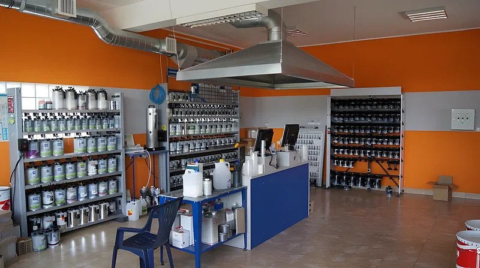
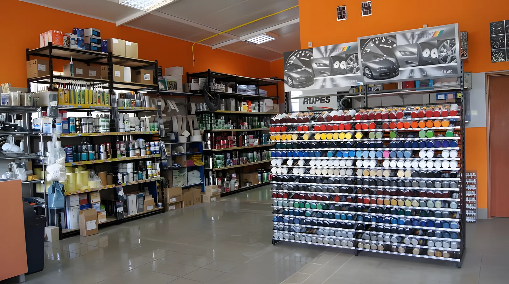
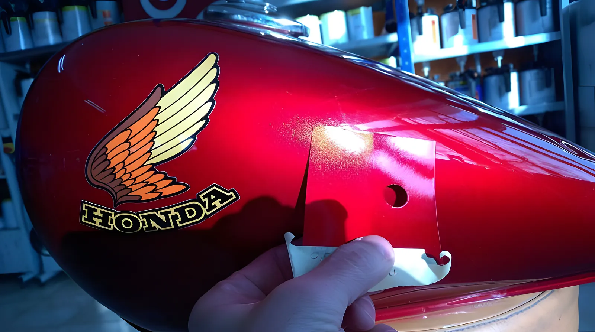
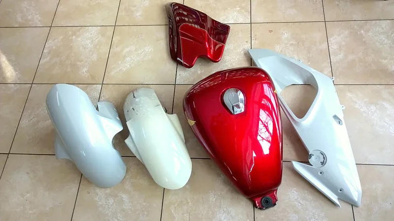
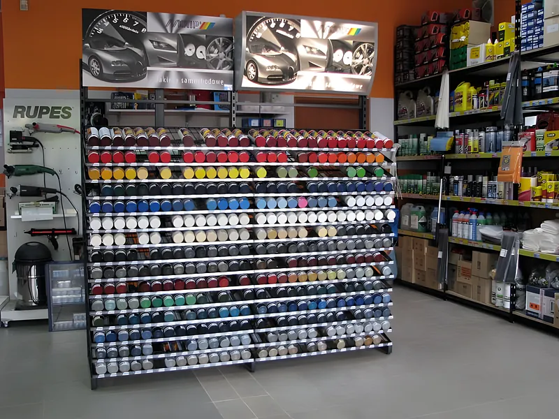
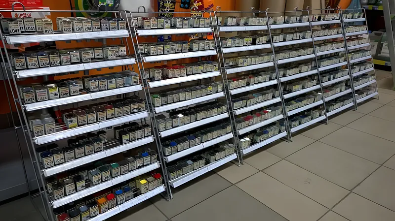
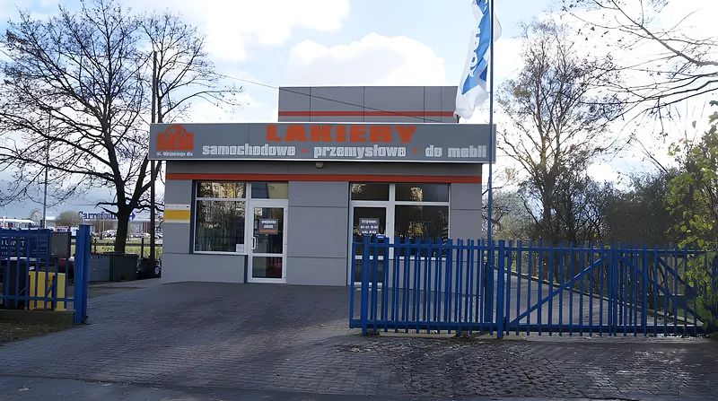
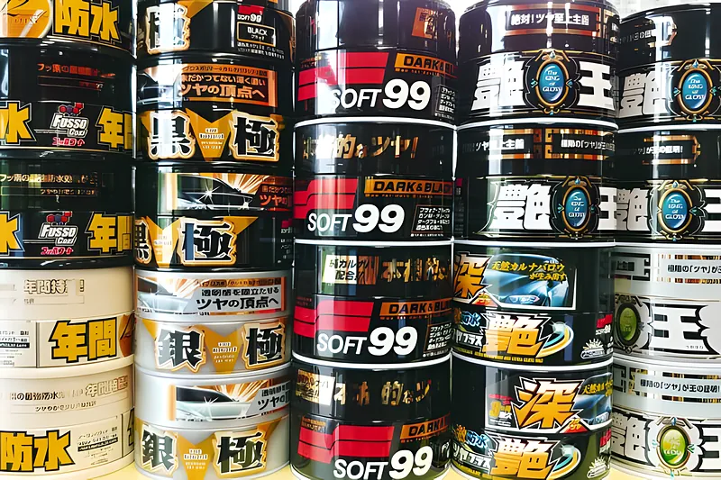
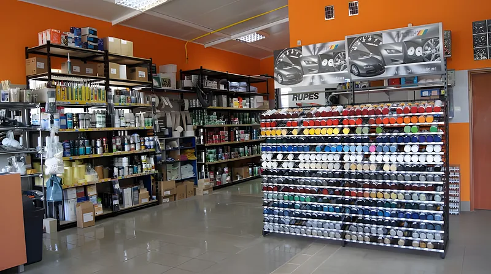
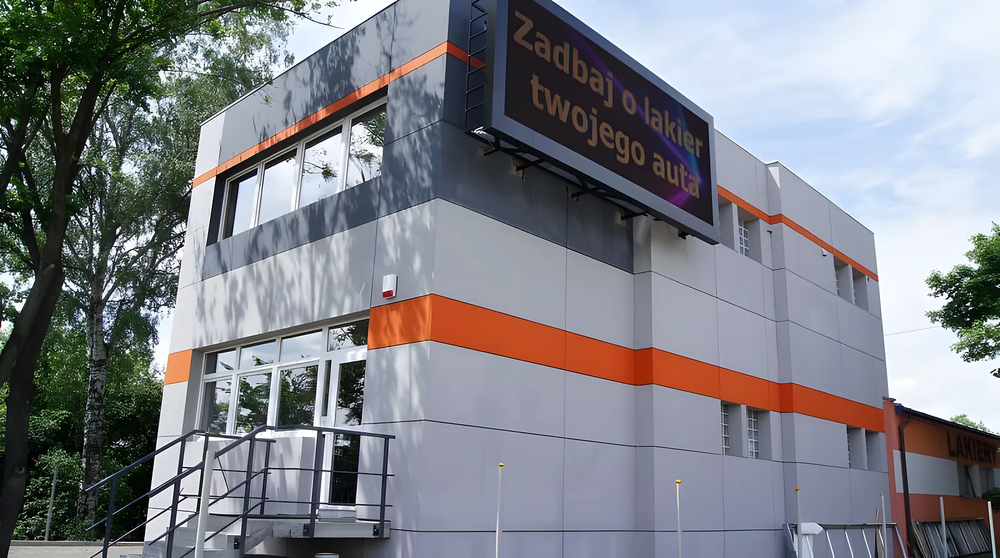

Lakiery samochodowe
Akrylowe i bazowe (metaliczne, perłowe) Standox, Mobihel i Challenger. Dorabiane po numerze lakieru albo do dostarczonego elementu.


Mieszalnia lakierów Standox w Bydgoszczy. Przywieź numer lakieru albo element, a przygotujemy lakier w puszce lub w sprayu. Spray w ciągu 2 godzin roboczych, zaprawkę w ok. 15 minut.
Ujejskiego 6a pon.-pt. 8.00-16.00
Numer lakieru znajdziesz zwykle na tabliczce znamionowej. Jeśli go nie ma albo lakier jest już wypłowiały, przywieź element, np. klapkę wlewu paliwa. Mieszamy na recepturach Standox, więc dorobimy kolor do każdego modelu samochodu i motocykla.
Od jednej zaprawki dla kierowcy po stałe zaopatrzenie lakierni. Doradzimy, co kupić i jak tego użyć.

Akrylowe i bazowe (metaliczne, perłowe) Standox, Mobihel i Challenger. Dorabiane po numerze lakieru albo do dostarczonego elementu.

Nasza specjalność. Perła, xyralic czy brylant w metodzie trójwarstwowej - po latach praktyki trudne kolory nie są dla nas straszne.

Pod kolor auta, ale też do domu, przemysłu i budowlanki - według numeru, z wybranym połyskiem. Gotowy do 2 godzin.

Gotowe lakiery akrylowe i metaliczne w aerozolu 400 ml z systemu kompakt Motip, do tego bezbarwne i podkłady.

Meblowe ICSAM z bazą ponad 65 000 receptur RAL, NCS i PANTONE, przemysłowe Mipa, GraviHel i Standofleet dla maszyn i pojazdów użytkowych.

Japońskie woski Soft99, pasty i gąbki polerskie Flexipads i Liquid Shine, środki do tapicerki, felg i plastików.
Sala sprzedaży, mieszalnia i regały z gotowymi lakierami. Przyjedź i porównaj kolor na żywo.

Od 1996 roku dostarczamy lakiernikom, stolarniom i firmom przemysłowym lakiery i materiały. Dobieramy ofertę tak, żeby zgadzała się jakość i koszt.

Przedsiębiorstwo Wielobranżowe KOLOR to spółka cywilna Mariusza Kilichowskiego i Piotra Piontka. Zaopatrujemy zakłady lakiernicze i klientów indywidualnych w materiały i narzędzia lakiernicze, a przy tym fachowo doradzamy.
Sercem firmy jest mieszalnia lakierów Standox. Dzięki niej skomponujemy kolor do każdego modelu samochodu i motocykla, a do ciężarówek i maszyn mamy lakiery GraviHel i Mipa.
Mariusz Kilichowski i Piotr Piontek
Podaj markę, model i numer lakieru albo dołącz zdjęcie. Oddzwonimy z odpowiedzią, czy i kiedy przygotujemy lakier.